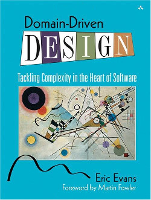

PyRochesterMN
Announcing the world's newest Python User Group, PyRochesterMN, based in Rochester, Minnesota, USA.
Update: We've had a couple of name & hosting changes since:
http://www.meetup.com/PyRochesterMN
Announcing the world's newest Python User Group, PyRochesterMN, based in Rochester, Minnesota, USA.
Update: We've had a couple of name & hosting changes since:
http://www.meetup.com/PyRochesterMN
I endlessly misremember when to use '...' in git versus '..'. That ends today:
To see the commits or diffs introduced by a branch (the filled circles ●):
f
+● m git log m..f
| ○
+● | git diff m...f
\ ○
\|
○
To see the commits or diffs between the tip of one branch and another:
f git log m...f
+● m All commits look the same,
| ●- unless you use --left-right, which
+● | shows where each commit comes from.
\ ●-
\| git diff m..f
○ '-' commits are shown inverted,
i.e. additions as deletions.
To see the commits from 'f' back to the beginning of time:
f
+● m git log f
| ○
+● | (diffs back to start of time are just
\ ○ the contents of the working tree)
\|
+●
|
+●
Throughout, omitted branchname defaults to current HEAD, i.e, the one of the above that you almost always want:
git diff m...f
is the same as
git checkout f
git diff m...
or
git checkout m
git diff ...f
Is there a word for unicode ascii art?
Some thoughts on Nylas' post "How We Deploy Code."
The goals of making deployment consistent, reliable and fast are very laudable, and the conclusion involving creating Debian packages is just great. But in the spirit of geek nitpicking, I can't help but think the justifications given are misguided, and overlook a simpler solution.
>> pip does not offer a "revert deploy" strategy
Yes it does. Throw away the virtualenv and create a new one using the requirements.txt from an earlier release. This might be slow, but you can both speed it up (see below), and you can keep old versioned virtualenvs around, as a cache of the output of this slow step, so that reverts (the time when you really want deploys to go quickly) require only a couple of symlinks.
Update: Oooh, and I just had an idea. You could version virtualenvs using a hash of the requirements, so that deploys which do not change dependencies can share the same virtualenv. I've never tried that - it might work?!?!
>> Installing dependencies with pip can make deploys painfully slow
This is true. But it's not the final word on the matter.
Firstly, don't grab the dependencies you're installing from PyPI. Have a
local cache of them. That speeds up the install tremendously, not just
because no download takes place, but also because no trawling of PyPI
and author sites for possible alternate versions takes place. Some
people use a local PyPI instance, but I like simply using a directory
full of packages. Point pip at it using
'pip install --no-index --find-links=packages -r requirements'. The
'packages' directory could be checked into your project's repo, so that
once you've checked a project out, you have everything you need to
deploy to local VMs, even with no network connection at all. I wrote
about this a while ago.
>> Building your code separately on each host will cause consistency issues
So don't install dependencies using source packages, use wheels instead. Then any slow or unreliable build step is done once, when you create the packages directory, while deployment is now reliable and requires no development tools on the production server such as compilers, headers, etc.
Update: As a bonus, this will again substantially speed up the creation of your virtualenv when deploying.
>> Deploys will fail if the PyPI or your git server are down
PyPI outages (or a package author deleting their package, which happens routinely) are not a problem if you're deploying from a local source of packages.
I agree that application code deployment shouldn't be done using a 'git pull'. Accessibility to GitHub shouldn't be a single point of failure, and the fewer development tools needed on production servers the better. So export the code from git into a tar file when you cut a release, and then push it out using scp at deploy time.
Having said all that, there are still advantages to having your whole app and its dependencies handled by a single mechanism like Debian packages, rather than more bug-prone ad-hoc scripts and Ansible config. So I'm not at all against the final conclusions of the Nylas article. (Hugs to you folks at Nylas!)
Dashed this out in ten minutes between daycare pickup and dinner being ready. Apologies for the inevitable shoddyness.
#!/usr/bin/env bash
# Directs audio input (e.g. mic) to audio output (e.g. speakers),
# then sleeps forever. Stops audio redirection when it is killed.
# So, for example, plug your phone into the PC's mic, run 'listen',
# and listen to phone audio through your computer's speakers.
#
# Requires:
# sudo apt-get install pactl # Ubuntu
set -e
module=$(pactl load-module module-loopback)
function cleanup {
pactl unload-module $module
}
trap cleanup EXIT
sleep infinity
I endlessly misremember how to use git rebase. That ends today. Here are my notes to help me remember.
Rebase is traditionally documented as:
git rebase [--onto newbase] [upstream [branch]]
This is confusing for several reasons. A slight improvement is to rename the args:
git rebase [--onto target] [exclude [include]]
Where:
include is the tip of the branch to be transplanted. If omitted,
it defaults to the current branch.exclude excludes all its ancestors from being transplanted. Hence
the transplanted branch will have its tip at include, and its base
at the common ancestor of include and exclude. If --onto isn't
specified, exclude is also used as the destination for the
transplant.target is the place to transplant the branch to. If not specified,
it defaults to the value of exclude.Hence, a simple before and after:
o---o---o---o---o---o exclude
\
1---2---3 current branch
or include
git rebase exclude [include]
exclude
v
o---o---o---o---o---1---2---3 current branch
or include
See how the commits to be transplanted start at include and go back to
the common ancestor of that and exclude. Since --onto isn't
specified, exclude is also used as the transplant destination.
Or a more complex one:
o---o---o---o---o target
\
o---o---o exclude
\
1---2 current branch
or include
git rebase --onto target exclude [include]
target
v
o---o---o---o---o---1---2 current branch
\ or include
o---o---o
^
exclude
Again, the commits to be transplanted are defined by include and
exclude, but this time a separate destination is specified using
--onto.

by Jim Rossignol (2009)
A gorgeous insider's look at videogaming culture, by an author who, after an unfulfilling stint as a financial journalist, has built his life around games.
Broken into sections corresponding with the author's experiences in London, Seoul and Reykjavik, it's thoughtful and manages to sidestep the patronising oversimplifications of mainstream media's gaming coverage.
From Tetris and Elite to Okami and Shadow of the Collossus, stopping along the way to examine the modding and indie scenes, the massively multiplayer intricacies of EVE Online, and the insane heights of Korean real-time strategy matches. He knows the best Prince of Persia was Sands of Time, by a country mile. He's one of us. I felt welcomed to his world. Join us - we'll be on the sofa.
Rating:
10/10 if you understand that games have the potential to become the dominant art form of the 21st century.
0/10 if it's just for kids, innit?

by Ivar Jacobsen (1992, 4th revision)
You might wonder if there's anything left to say about object-orientation that hasn't already been discussed to death. I was led to this 1992 book by Uncle Bob's talk "Architecture: The Lost Years." In it Bob posits that in the 1990s, just as people like Ivar were completing their 20-year journey of figuring out some fairly optimal ways to do object-orientation, along came the disruptive influence of the web, which turned everyone's priorities, methodologies and designs upside down. In the resulting stampede, some highly practical ideas have been lost, both in terms of design and process. This has substantially watered down OO's ability to deliver on its promises of reuse and maintainability. It has stranded a whole generation of applications with distorted architectures, inside-out designs, and less maintainable code.
Aspects of these historical approaches do survive, such as the prominence Agile gives to use-cases as a way to concretely tie together requirements, design, testing, and acceptance. But some equally powerful ideas, such as appropriate ways to manage dependencies within an application, have seen relatively little use, and are only now being rediscovered in guises such as the clean and hexagonal architectures.
Ivar's book can certainly lay claim to being one of the earliest published sources to lay out these ideas, and he does so with a style that is convincingly thoughtful. This is the work of an intelligent man, honed and refined over many years of practice. The omission of modern testing techniques are the only thing that substantially dates the content. Otherwise I found it exciting, insightful and revolutionary. It seems naive to claim that this book describes the One True Architecture which is applicable to all systems. But it certainly seems very widely applicable, and has deeply affected my thinking on all projects larger than a couple of weeks' work.
The book also discusses software development methodology in an intriguingly meta way, constructing an object-oriented model of the process itself. Each software development team or organisation represents a particular implementation of this model. Parallels with the execution of software are drawn, with the output of one part of the process, e.g. design work, having to produce results that conform to the expectations of the downstream process, such as implementation. In this way, sections of the process can be removed and replaced by compatible alternatives, to better suit the application domain and the organisation within which the project is embedded. These ideas seem less immediately applicable and actionable. Maybe that's just my personal circumstance. Perhaps they are more applicable to larger projects, which I avoid these days.
Rating:
10/10 if you're going to enjoy 500 pages of software design principles and case studies.
0/10 if you're not.
by Richard Morgan (2001)
A romp through a hyperviolent cyberpunk future through the eyes of a character reluctantly press-ganged into the role of detective in a story woven around personality uploads, swaps, and backups. Thoroughly enjoyed it, but it was never going to be life-changing.
10/10 if you're looking to kick back on the couch with tea, cake, and some exciting SF.
0/10 if you're not.

by Eric Evans (2004) on Amazon
It's a big, dense book -- possibly the most important of the technical books I've read in a flurry over the last few months, catching up after recovering a modicum of sanity in our lives after our kid's first year. I finish it feeling changed, invigorated, and given new direction.
At its core is a simple idea, which sounds neither new nor revolutionary on the surface. Software projects, Evans maintains, should work closely with business experts to create and maintain a domain model. The model might be expressed as a class diagram of core business concerns, and should also correspond directly to a body of code modelling these business entities. This forms a set of core business entities which are clearly analogous to things like the core enterprise entities of the hexagonal or clean architectures.
However it's created, the terminology and notation used in the class diagram (or it's equivalent) should be well understood by individuals on both side of the tech/business divide. In the past I think I've made the mistake of believing that only developers needed to understand it, and therefore the model only needed to be expressed in code.
This model should be displayed prominently, referred to continually, and in a healthy project should very directly correspond to the specialised language that evolves within the organisation. Where the team's language doesn't match the model - for example, your business experts' use of plurals betrays that the cardinality of relationships are modelled wrongly, then the model - and the underlying code - should be aggressively refactored to match reality.
Evans makes a persuasive case that the appropriate management of this complexity at the heart of your software will be a major influence on the success of the project. To be fair, this is a viewpoint that I already believed in, so I was a sucker for all of this. Without an appropriate approach to these central design concerns, over time developers will find they are no longer able to understand the code thoroughly enough to be able to modify or extend it easily, unless they deliberately or inadvertently use design-breaking hacks like redundancy or mislocated chunks of code. This forms a vicious cycle of technical debt accrual, and creates an upper limit on the size or complexity which can be achieved by any project before productivity begins to slump. Other metrics like reliability then also suffer.
To counter this, conquering these central design issues requires a pro-active and multi-pronged effort. Firstly, the existing design must be understood by all parties. In order for this to remain true, the design needs to be kept up to date and be easily understood by new team members. The code must be kept directly in sync with the model, and kept understandable - inappropriate dependencies must be ruthlessly pruned. Simultaneously, the "correct" design must be discovered iteratively, throughout the life of the project, and this can only be done by encouraging continual conversations between developers and business folks to discuss the potential inadequacies of the current design and possible alternatives.
When managed correctly, this lends an agility and suppleness to project. Developers find it easy to integrate subsequent parts of code because they 'fit naturally' into the existing design, and when the design is found wanting, it's relatively easy to modify it to incorporate new concerns.
There are times when I've struggled to convey the message about how the resulting trade off works between time spent refactoring versus time saved over the long term. Evans describes this in an interesting way. Instead of trying to model team productivity by applying a multiplier to describe drag caused by technical debt, he simply contrasts the normal way projects slow down as they become larger and more complex, with a project that instead speeds up over time, as developers, unhindered by a cycle of technical debt, are instead empowered by the creation of powerful and expressive abstractions, which can then be relatively easily reconfigured into unanticipated configurations.
To counter-balance this idealistic hand-waving, the next section dives right into some specific design practices which embody these ideas. These are valuable and insightful, stock-in-trade, such as distinguishing between entity and value types. But many of the ideas were completely new to me, such as the concept of aggregates, which define subsets of the domain model which are always atomically retrieved from (or updated in) a data store.
In short, I really loved this book. It stretched and inspired me. It's in a very small set of books I've flagged to re-read in a couple of years. It's top of my list for 'books to bring in and talk about at work'.
Rating:
10/10 if you're a programmer, or work with programmers.
0/10 if you're not, or don't.

by David Foster Wallace (1999)
A collection of creative essays, varying from playful to unflinchingly uncomfortable, shot through with Wallace's typical humour and introspection.
I've tended to love and hate his other writing in equal measure, but with such ferocity that I unreservedly place him amongst my very favourite authors. There wasn't even much for me to hate in this one, relatively lacking as it is in labyrinthine footnotes.
A couple of the essays left me cold (Tri-Stan: I Sold Sissee Nar to Ecko springs to mind), but most of them I found thoroughly engaging and thought provoking. I'm tempted to read up on those that seemed most challenging to me (Church Not Made With Hands, say), and give them another try.
It's been a while. Rating:
0/10 if you don't want to delve deeply into sometimes uncomfortable subjects, such as depression, unconventional sex acts, and rape.
10/10 if you like to be stretched, or at least stirred around, in interesting directions.